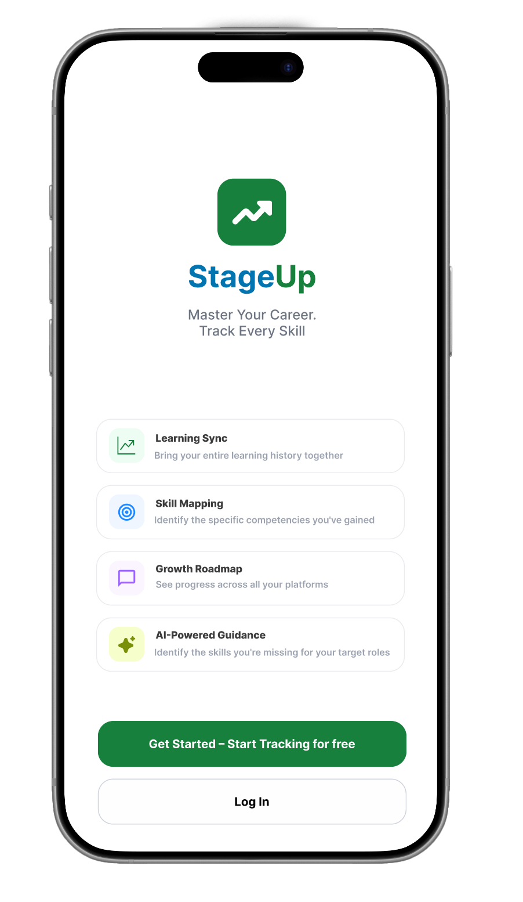
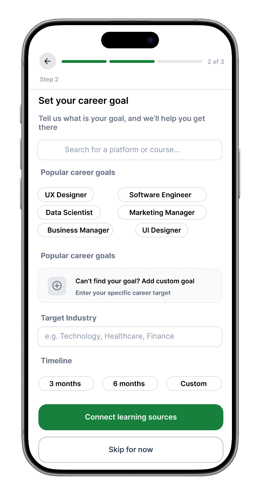
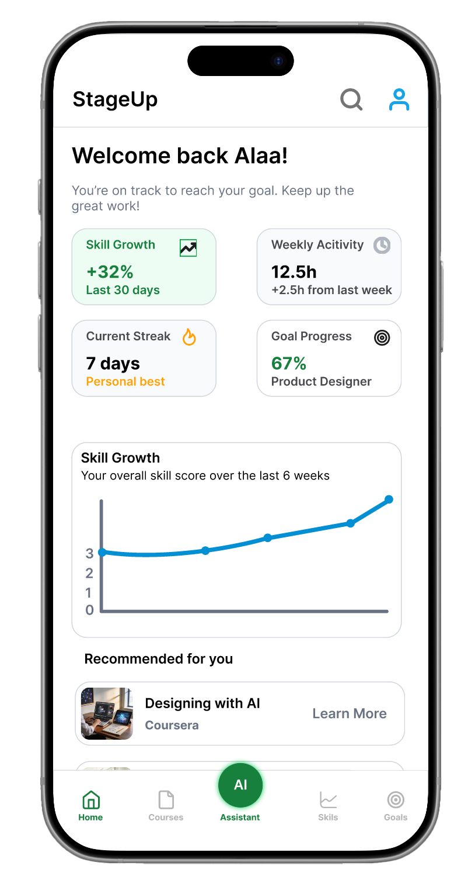
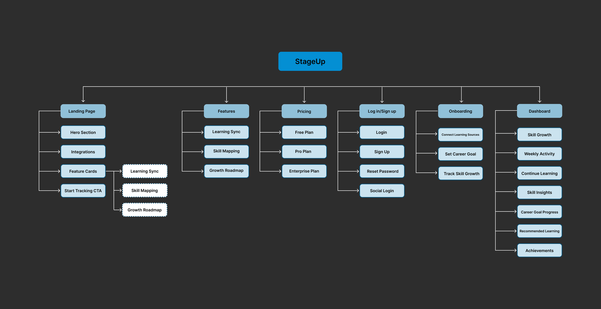
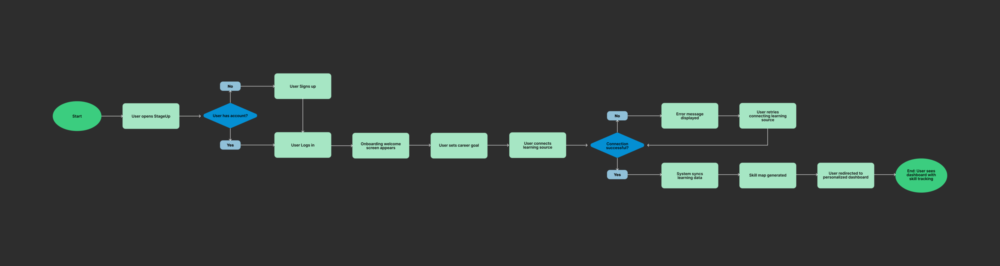
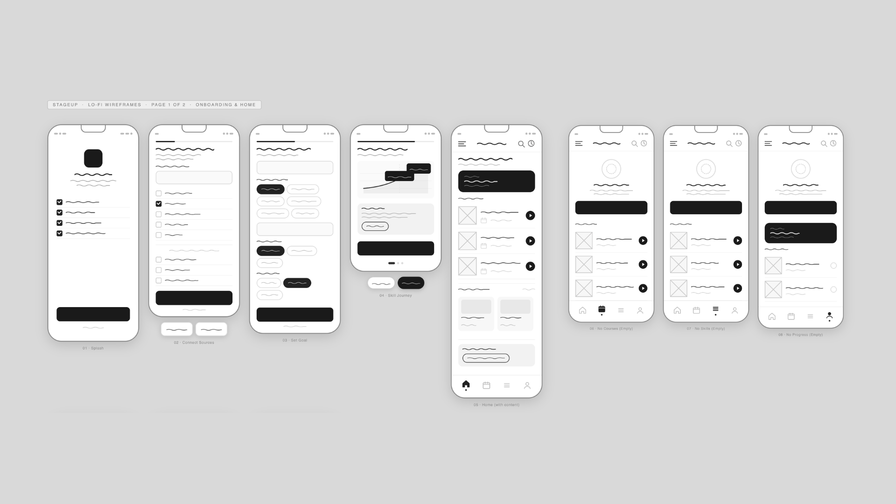
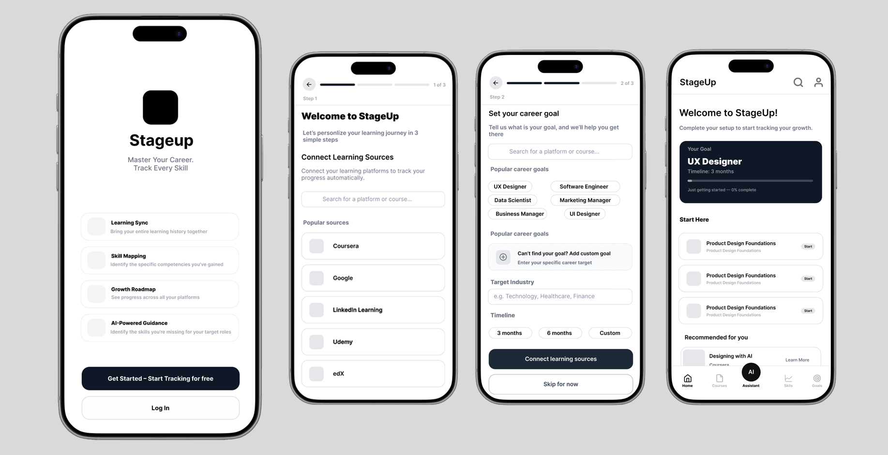

UX / UI · Product Design
A product design case study exploring how to unify fragmented learning into one clear career growth experience.
My Role
Solo Product Designer
Tools
Figma, FigJam, Notion
Platform
Web and Mobile
Deliverables
Research, Information Architecture, Task Flow, Wireframes, High-Fidelity UI, Interactive Prototype
Overview
StageUp is an original product design project created to solve a problem I experienced firsthand as a learner. Professionals today learn from multiple platforms at the same time. Coursera, Udemy, YouTube, and LinkedIn Learning are all great on their own. But each platform tracks progress independently, leaving learners with no single place to understand their overall skill growth or how close they are to their career goals.
This case study walks through my full design process. Starting from identifying the core problem through research and information architecture, to wireframing, high-fidelity design, and an interactive prototype. The result is a product that connects fragmented learning to real career outcomes.
Problem
Learners building professional skills today face a fragmented experience. Using multiple platforms at the same time creates challenges that go beyond just staying organized.

Learning progress is scattered across platforms with no unified view.
Learners using multiple platforms must manually check each one separately — a process that is time-consuming and often abandoned.
Each platform measures progress in a completely different way.
Some platforms use certificates, others use percentage watched, hours logged, or no tracking at all. This inconsistency makes it impossible to get a true picture of overall development.
Finishing a course does not tell you how close you are to your career goal.
Most platforms focus on course completion rather than long-term skill development. Users are left to make the connection between their learning and their career ambitions entirely on their own.
Without visible progress, learners lose momentum and stop.
When growth feels invisible, it is easy to believe you are not making progress even when you are. Motivation drops and learning frequency decreases over time without a feedback loop that shows real growth.
Learners struggle to prove their skills when applying for jobs.
With progress spread across five different platforms, there is no single profile that shows what a learner actually knows. This creates real barriers when communicating skill level to potential employers.
Solution
StageUp acts as a connective layer between learning platforms. It syncs learning activity from Coursera, Udemy, LinkedIn Learning and others, maps everything to a unified skill profile, and recommends next steps based on the user's career goals.
Rather than replacing existing platforms, StageUp makes them work together. Users get one place to understand their growth, track their progress across all platforms, and stay motivated toward a real career outcome.
Connects to multiple platforms and pulls in learning activity automatically.
Translates completed courses into skill tags such as UX Design, Data Analysis, and Product Strategy.
Shows how skills are developing over time through charts and progress indicators.
Compares current skills against a chosen career goal and highlights what is missing.
Suggests the next course or learning path based on where the user is and where they want to go.
Persona
Before defining how the solution would work, I needed to understand exactly who I was designing for. Sarah represents the core user — someone experiencing every problem StageUp was built to solve.
Sarah Mitchell, 26
The Ambitious Career Switcher
Sarah is a marketing coordinator transitioning into UX design — learning across Coursera, Udemy, and YouTube with no clear view of her progress or how far she is from landing her first UX role.

Research
Sarah's experience was not unique. Research across the major platforms that professionals use most confirmed the same patterns at scale.
I analyzed how Coursera, Udemy, LinkedIn Learning, and YouTube each handle progress tracking, goal setting, and skill visibility — and what was clearly missing across all of them.
Learners understand the product faster when onboarding is structured and goal-oriented.
Platforms that drop users directly into a course library see significantly higher drop-off rates. A guided first experience that communicates the product's value leads to stronger retention and more active long-term usage.
Connecting learning to a real career goal keeps users engaged longer than generic recommendations.
Users are more likely to return and continue when every recommendation feels relevant to where they want to go. Generic course suggestions do not create the same sense of purpose as a personalized path tied to a specific career outcome.
Seeing growth visually makes progress feel real and worth continuing.
Charts, milestones, and skill indicators sustain motivation far better than text-based summaries alone. Platforms that use visual progress tracking consistently see higher completion rates and stronger daily engagement.
Mobile users need information that is scannable and immediately meaningful.
Most learners check their progress quickly during short breaks or commutes. Complex, data-heavy screens with buried menus cause frustration on mobile. The first screen a user sees needs to answer one question instantly: how am I doing?
Challenge
The research made one thing clear: the core problem was not behavioral — it was structural. Different platforms track learning in completely different ways, with no universal standard to work from.

tracks progress through certificates and course completion.
tracks progress through percentage of video content watched.
tracks progress through hours spent learning.
has no progress tracking at all.
The challenge was: how do you take four completely different data formats and turn them into one meaningful skill profile?
StageUp solves this by converting all learning activity into skill tags weighted by engagement depth. Completing a full course sends a strong signal. Watching part of a video sends a lighter signal. Courses that include hands-on projects carry a higher weight than passive video content.
This creates a dynamic skill profile that reflects what users actually know, not just what they started or clicked on.
This was the most important systems design decision in the entire project. Without solving this, the rest of the product could not exist.
Structure
With the core data challenge solved at the systems level, I could map out the full product structure. The IA separates the pre-login marketing and auth experience from the post-login product experience.
Pre-login covers the landing page, features, pricing, and authentication. Post-login begins with onboarding where users connect their learning sources and set their career goal, then moves into the main dashboard.

The most critical onboarding action is connecting a learning platform. Without learning data the product cannot generate skill insights or personalized recommendations. The flow includes a recovery path in case the platform connection fails, ensuring users are never stuck without a next step.

Design Process
Before moving into high fidelity design, I mapped out the core screens in low fidelity. The goal at this stage was to focus entirely on structure, layout, and user flow without getting distracted by visual details. The wireframes are divided into two sections — onboarding and home, and the dashboard and profile experience.

With the low fidelity structure validated, I moved into mid fidelity to bring the product closer to its final form. At this stage I introduced real content, refined the visual hierarchy, and defined the core UI components. This allowed me to test how the design felt with actual data before committing to the final visual direction.

View in Figma →After testing the mid fidelity prototype with real users, I collected feedback on layout clarity, navigation flow, and how easily users could understand their skill progress. Several improvements were identified based on what users struggled with and what they responded to positively.
The high fidelity design is the direct result of those iterations. I refined the typography, color system, spacing, and component consistency to create a polished and intuitive experience. Every screen was designed with two priorities in mind. Clarity of information so users always know where they are and what to do next. And motivation to keep learning so the product feels rewarding to use every day.
 View in Figma →
View in Figma →
Decisions
Progress needed to feel real and motivating. I used an 8-week chart so users can see momentum building over time, not just a static number.
Every screen connects back to the user's career goal. The dashboard always shows how far they are and what they still need to learn.
Most users check progress quickly on mobile. The most important information appears first without any scrolling needed.
I designed onboarding as a guided 3-step flow so users feel confident and understand the product before they reach the dashboard.
Test
I conducted two rounds of usability testing throughout the design process. The first round tested the mid fidelity prototype to validate core flows before moving into high fidelity. The second round tested the final high fidelity prototype to confirm that the design improvements were successful.
Participants were asked to complete key tasks including connecting a learning source, setting a career goal, and navigating the dashboard.
Onboarding Was Clear and Easy to Follow
Users completed the 3-step onboarding flow without confusion and understood the product value immediately.
Career Goal Connection Was the Most Valued Feature
Every participant highlighted the career goal progress bar as the most useful part of the dashboard.
Navigation Needed Simplification
Some users were unsure which tab to use for finding new courses. This led to simplifying the navigation labels in the high fidelity version.
After applying the improvements from round one, I tested the final high fidelity prototype with users. The feedback was overwhelmingly positive.
Navigation Was Significantly Clearer
Users moved through the app confidently with no confusion about where to find courses or track their progress.
Visual Design Was Received Very Positively
Users responded enthusiastically to the polished interface, describing it as clean, motivating, and easy to use.
Skill Progress Visualization Was Highly Engaging
Users found the 8-week skill growth chart compelling and said it made them want to keep learning.
The Product Felt Complete and Ready to Use
Multiple participants said StageUp felt like a real product they would download and use immediately.
Prototype
Throughout the design process I built and tested two interactive prototypes. The mid fidelity prototype was used to validate core flows with real users, and the high fidelity prototype represents the final polished experience.
Explore the full high fidelity prototype below to experience the complete StageUp user journey from onboarding to the personalized dashboard.
Reflection
StageUp taught me that the hardest design challenges are structural, not visual. The biggest problem was not how the product looked. It was how to create a meaningful system from learning data that was never designed to work together.
Reframing the problem was the most important decision I made. Users do not want to simply sync their learning platforms. They want to become UX designers, get promoted, or transition into new careers. By focusing on career goals rather than course completion, StageUp transforms fragmented learning activity into a clear path for growth.
Designing a long term feedback loop where the product becomes more useful the more it is used was the most valuable lesson from this project.
A smarter recommendation engine that learns from user behavior over time and suggests the most impactful next step toward their career goal.
Connecting skill profiles to real job requirements so users can see exactly how their learning maps to roles they are applying for.
Allowing users to share their skill profile publicly, giving them a way to demonstrate real growth to employers beyond a traditional resume.